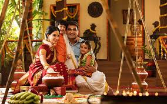
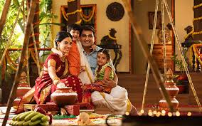

Popular among the festivals of India celebrated in the North East, Bihu is the harvest festival of Assam. During the month-long celebrations, young men and women wear their traditional clothes and perform the Bihu dance in the village fields and courtyards. During Bihu celebrations in India, a community feast is held with a lot of fanfare. Significance: It’s the traditional new year celebration of Assamese. Key attractions: The Bihu dance and the local cuisine – coconut ladoo, til pitha, ghila pitha, and fish pitika When: 14th April Where: Celebrated by the Assamese diaspora around the world, especially in Assam
 

The four-day long harvest festival of South India is one of the most famous festivals of India. People prepare Pongal dish and wear their traditional attire. On this famous festival of South India, celebrities include bonfires, dancing, cattle races, sweets, and savories. The houses look resplendent with Kolam designs (traditional floral designs made with rice, colored powders, and flower petals) Significance: It’s a festival of thanksgiving to nature representing the first harvest of the year. Key attractions: The variety of Kolam designs and cattle races When: 15th January Where: Celebrated by Tamils all over India, primarily in Tamil Nadu
Previous Next